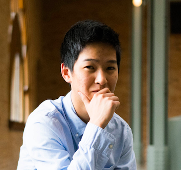

Tournament Coordinators
-

Abraham Chen
Business Administration and Computer Science, Berkeley 2019
-

Alex Lu
Bioengineering, Stanford 2019
-

Denis Li
Electrical Engineering and Computer Science, Berkeley 2019
-

Dhruv Puri
Molecular and Cellular Biology, Berkeley 2019
-

Jonathan Wang
Computational Biology, Stanford 2019
-

Rohan Chakraborty
Chemical Engineering, Berkeley 2019
-

Ryan Cohen
Mechanical Engineering, Stanford 2019
I’m a Mounds View Scioly Alumni, and I’ve been involved in Scioly all through high school. One time my team’s Scioly bus got stranded on a highway for 7 hours, making our trip to a tournament 21+ hours. That’s dedication.
Favorite events: Forensics, Fossils, Experimental Design
Fun fact: I like heights because it scares me.
Hi! I’m Alex! I competed in Science Olympiad for three years at Palo Alto High School, and while I don’t have a decreasing series of numbers as elegant as Ryan’s, I’ve experienced a variety of study/lab events at Regionals, States, and Nationals. Honestly I thought the 2015 season as one of Paly’s captains would be my last year involved with SciOly, like ever, but I guess I’m not getting away from this one! For anyone at Nationals in 2013, we were that dorky team that had dyed our hair (all of it) green.
Fun fact: This picture is from States 2015 because my high school plans prom on the same day.
I've been involved with Science Olympiad at Mounds View since 2012. I have attended 3 nationals (captaining a team with Jon for one of them). My favorite events are It’s About Time, Technical Problem Solving and Compound Machines. Science Olympiad was by far my favorite thing that I did in high school and I hope our tournament will be a blast for everyone attending!
Fun fact: People who have more birthdays live longer.
I’m a Mounds View high school alum who has been to nationals since my freshman year. Scioly has played an influential role in my dedication towards impacting society through health and tech! I am looking forward to sharing my Science Olympiad experience with current scioly competitors by helping to run invitationals across the bay area, hoping to inspire and enrich STEM education for students nationwide.
Favorite events: Mission Possible, Chemistry Lab, Sounds of Music, Designer Genes
Hi, my name is Rohan Chakraborty, and I’m an alum of Seven Lakes High School and Beckendorff Junior High in Katy, Texas. Throughout my Science Olympiad experience, I’ve competed extensively in building events such as Gravity Vehicle and Scrambler as well in as lab events like Chemistry Lab and Forensics. With my experience at the national level, I’m looking forward to creating an unforgettable experience for Science Olympians in the beautiful Bay Area!
Favorite events: Chem Lab, Forensics
Fun fact: I love anything and everything Drake.
Hey, I’m Ryan! I’ve competed in Science Olympiad for 7 years, done build events for 6, gone to state for 5, coached a team for 4, proctored B division for 3, captained a team for 2, and supervised an A division event for 1 year. I’m from Mira Loma High School in Sacramento, where I’ve had the unparalleled pleasure of competing repeatedly and unwillingly in Mission Possible, as well as less-hellish events including Circuit Lab, MagLev, Compound Machines, and TPS.
Fun fact: I hold the incredible honor of once placing absolute dead last at Nationals. 60th place in Junkyard challenge, 2011. Shoutout to my coaches for never letting me forget it!
Additional Team Members
-

Dusty Schroeder
Faculty Advisor
Assistant Professor of Geophysics, Stanford University
-

Garrick Fernandez
Director of Design
Stanford 2019
-

Neil Patil
Website and Technology Development
Computer Science, UT Austin 2020
-

Alexis Hidalgo
Evaluation Committee
Environmental Science, Berkeley 2019
-

Amber Feng
Evaluation Committee
Legal Studies and Business, Berkeley 2020
-

Becca Nelson
Evaluation Committee and Event Supervisor for Invasive Species
Stanford 2020
-

Christopher Lung
Evaluation Committee
Materials Science and Engineering, Berkeley 2020
-

Grant Wang
Evaluation Committee
Computer Science and Cognitive Science, Berkeley 2020
-

Kevin Tien
Evaluation Committee
Human Biology and Computer Science, Stanford 2020
-

Rohan Konnur
Evaluation Committee and Event Supervisor for Remote Sensing
Electrical Engineering and Computer Science, Berkeley 2019
-

Sarah Gurev
Evaluation Committee and Event Supervisor for Hydrogeology
Stanford 2020
-

Alaric Qin
Event Supervisor for Electric Vehicle
Systems/Transportation Engineering (Master's), University of Pennsylvania
-

Daniel Shen
Event Supervisor for Chemistry Lab
Mechanical Engineering, Berkeley 2019
-

Guillermo Angeris
Event Supervisor for Optics
Electrical Engineering, Stanford
-

Hanjay Wang
Event Supervisor for Forensics
Resident in Cardiothoracic Surgery, Stanford University
-

Jaymo Kang
Event Supervisor for Material Science
Material Science and Engineering & Electrical Engineering and Computer Science, Berkeley 2019
-

Jon Bartlet
Event Supervisor for Disease Detectives
Bioengineering, Stanford 2019
-

Justin Hong
Event Supervisor for Experimental Design
Computer Science & Molecular and Cell Biology, Berkeley 2019
-

Nick Bowman
Event Supervisor for towers
Computer Science & Aerospace Engineering, Stanford 2019
-

Rebecca Shi
Event Supervisor for Anatomy & Physiology
Neuroscience (PhD), Stanford
-

Shaina Zuber
Event Supervisor for Microbe Mission
Mathematics & Pre-Haas/Economics, Berkeley 2020
-

Sylvia Targ
Event Supervisor for Dynamic Planet
Marine Science and Conservation & Resource Studies, Berkeley 2020
-

Vyassa Baratham
Event Supervisor for Wind Power
Physics, Berkeley
-

Yujane Chen
Event Supervisor for Ecology
Environmental Sciences, Berkeley 2020
Dusty Schroeder is an assistant professor of geophysics in the School of Earth, Energy, and Environmental Sciences at Stanford University. He works on the fundamental problem of observing, understanding, and predicting the configuration and evolution of ice sheet boundary conditions using ice penetrating radar sounding data. Before coming to Stanford he worked as a radar systems engineer with the Jet Propulsion Laboratory at the California Institute of Technology on NASA’s Europa Clipper Mission. Dusty is also a former Science Olympian competitor (Solon Middle School and High School between ’97 - 02), coach (LASA High School ’07 - ’14), national event supervisor (Astronomy ’03 - ’11, Reach for the Stars and Solar System ’12 – present), and national committee co-chair (Earth and Space Sciences ’15 – present).
Hey, I’m Garrick, and I’m currently a sophomore at Stanford University interested in studying computer science, product design, or anything, really. In my spare time I jam on the ukelele, go on reddit, work as a theatre technician, and dabble in graphic design. I am excited to be working with the team at Golden Gate to inspire new generations of high school students to get excited about STEM!
Favorite events: Anatomy and Physiology, Protein Modeling, Geologic Mapping
Hello! I'm a LASA alum and was captain of LASA's Science Olympiad team during 2015 and 2016. I did build events, which means that most of my SciO memories involve soldering in a hotel room bathtub, getting gliders stuck in chandeliers, or getting kicked out of Wal-Mart at 1 AM (sometimes you gotta test Scrambler the night before...) Science Olympiad has been a pretty big part of my life (in both the good and bad ways), so I'm glad to be helping run this tournament.
Favorite events: Scrambler, Mission Possible
Fun fact: When I wasn't doing SciO, I was programming. Some of you might remember LASACTF.
Hi I’m Alexis! I’m an alum of School For Advanced Studies in Florida where I formed and led two Science Olympiad teams. I competed in Scioly for 5 years and loved / stressed over every moment of it! I can’t wait to be a part of it all over again and help out this year!
Favorite events: Forensics, Chemistry Lab, Helicopters
I am an undergraduate at UC Berkeley and intends to double major in Legal Studies and Business. I have participated in Science Olympiad for 8 years and is excited to continue being involved with the competition. I hope to eventually work in women's sports.
I'm an Adlai E. Stevenson High School and Daniel Wright Jr. High scioly alum who did Science Olympiad for 6 years. I competed at 5 Nationals, starting in 8th grade. Science Olympiad influenced me to pursue a career in ecology, so I'm excited to help out as an alum!
Favorite events: Invasive Species, Forestry, Ornithology, Fossils, Hydrogeology
Fun fact: I'm an avid birder!
I’m a current freshman at Stanford University with plans to major in Human Biology and minor in Computer Science. I’m originally from Louisville, Kentucky, where I helped captain DuPont Manual High School’s Science Olympiad team. Outside of academics, I enjoy volunteering for Cardinal Free Clinics, playing for Stanford’s Club Ultimate Frisbee Team, and searching for nearby boba tea cafés.
Favorite events: Wright Stuff, Robot Arm, Dynamic Planet, Hydrogeology, Elastic Launch Glider
Fun fact: I play club frisbee for UC Berkeley, and I'm always willing to throw!
Hello world, I’m Grant, former SciOly captain at Valencia High! My SciOly adventure began at Kraemer Middle, and I gradually found a passion for build events at Valencia High (competed 6 years). I still remember the long hours I spent soldering wires, gluing bridge joints with impossible precision, and getting wright stuff planes stuck in the ceiling. I have also helped coach the Kraemer team for 4 years and helped coordinate the CA Inland Empire Regionals and invitationals in the OC region. Overall, my SciOly experience has been a blast and I look forward to continuing to work with students in the community!
Favorite events: Robot Arm, Wright Stuff, Bridge Building
Fun fact: I love solving Rubik’s Cubes and writing/blogging!
I’m a current freshman at Stanford University with plans to major in Human Biology and minor in Computer Science. I’m originally from Louisville, Kentucky, where I helped captain DuPont Manual High School’s Science Olympiad team. Outside of academics, I enjoy volunteering for Cardinal Free Clinics, playing for Stanford’s Club Ultimate Frisbee Team, and searching for nearby boba tea cafés.
Hi! Over the course of 6 years, I competed for Winston Churchill Middle School and Mira Loma High School in Sacramento, CA. In those years, Science Olympiad became the most important influence on my collegiate and career choices leading me to where I am today. I hope to contribute to Science Olympiad to further impose the competition's positive influence on other students to help them discover their passions.
Favorite events: Fossils, Technical Problem Solving, Remote Sensing
Hi, I’m Sarah Gurev, and I'm a Mira Loma and Churchill Scioly alum. I've had the opportunity to attend Nationals five times, and the distinct pleasure of competing in every single water event each time (Awesome Aquifers will always hold a special place in my heart). My favorite event, however, is Protein Modeling. Science Olympiad was such a large part of my life, so I'm grateful it's not quite over yet. I'm really excited to help bring this tournament to life!
Favorite events: Protein Modeling
Hello! I'm Alaric, born and raised in Los Angeles, been involved with Science Olympiad for nearly 11 years now, Troy High c/o 2011, University of Pennsylvania c/o 2016 (M&T dual degree in Electrical Engineering & Management/Marketing; master's degree in systems/transportation engineering). Currently, I work in San Francisco at McKinsey&Company, a global management consulting firm. I was a former captain and 4-year member of Troy Science Olympiad, where I competed at Regionals, State and Nationals in mostly engineering events (of which Mission Possible was, and will always be, my favorite event of all time). In the years following high school, I directed three invitational tournaments in Southern California for Division B teams and have had extensive experience event supervising both Div B and C. Really excited to be a part of this Bay Area event!
Daniel Shen is a sophomore studying mechanical engineering at UC Berkeley, although many of his friends would say his true passions lie in chemistry. After suffering through organic chemistry lab this semester, however, he is unsure about whether he wants to ever take another chemistry course.
Favorite events: Chemistry Lab and Circuit Lab.
Fun fact: I ballroom dance competitively as part of Cal Ballroom.
I'm a Stanford EE student interested in physics, mathematical optimization, and puppies; I also sometimes pretend to do research and things.
Fun fact: I’ve fallen asleep on a table in at least 4 different science olympiad practices.
Hi! I’m a heart surgeon-in-training at Stanford University, and my interests include both adult and pediatric heart surgery, and developing new surgical technologies for use in the operating room. I previously competed in Scioly for Naperville Central High School (IL), leading the team to its first ever Nationals appearance in 2007. I’m still involved with Scioly as a coach for Palo Alto High School, and I hope to continue contributing at Scioly tournaments of all levels in the future.
Favorite events: Astronomy, Forensics, Fermi Questions, Storm the Castle, Sounds of Music
Fun fact: I’m also an orchestral conductor
Hi, I'm Jaymo, a 2nd-year MSE and EECS major at Berkeley. Throughout my high school science olympiad career, I competed in materials science, maglev, compound machines, chemistry, and forensics. At Berkeley, I'm involved with the Materials Science and Engineering Association, EE course staff, and IM sports. I'm really excited to see everyone have a great time at the competition!
Fun fact: 1v1 me in basketball
Hey, I'm Jon and I am currently a Sophomore at Stanford studying Bioengineering! I'm a Camas High School alumnus from Washington State and I've competed for four years and been to four national tournaments. Some of my best memories from high school came from studying and spending time with my Science Olympiad team, and I'm excited to contribute to this tournament and make it a fantastic experience for all of you!
Favorite events: Disease Detectives, Protein Modeling, Cell Biology
Fun fact: In 2012 I ran through a thunderstorm in Florida right before Nationals because who needs to study before a tournament?
I'm an alum of Acton-Boxborough Regional High School, which I was a part of for four years. Science Olympiad definitely grew my passion for the expansive world of science which I continue to study today.
Favorite events: Anatomy and Physiology, Cell Biology, Experimental Design
Hey, I'm Nick! I've had the joy of competing in Science Olympiad for 3 years at Troy High School in Fullerton, CA, during which I got to be a part of two Nationals-winning teams. I captained the team in my senior year and enjoyed competing in my favorite events It's About Time and Compound Machines, along with some more frustrating/hellish events like Anatomy, MagLev (1st place at Nats, yay!), Experimental Design, and Bridges.
Fun fact: My MagLev car for Nationals 2014 was made to work (at 2 am on the day of Nationals) with the help of a component salvaged from a Happy Meal toy.
Hi, I'm Becky, and I'm currently a Neuroscience PhD student at Stanford University. I graduated in 2011 from West Windsor-Plainsboro High School South in New Jersey, where I competed on the Science Olympiad team for 4 years. I continued my involvement with Science Olympiad as a planning member and event supervisor of MIT's Science Olympiad Invitational in 2015 and 2016, and I'm looking forward to supervising Anatomy and Physiology at the Golden Gate Invitational in 2017!
Fun fact: My favorite events are Ornithology and Cell Biology, and my experience with Ornithology fueled an ongoing hobby of birdwatching :)
Hi! I'm Shaina, a graduate of Mira Loma High School. After being asked to fill in for my school's SciOly B team at Regionals my junior year, I joined the the team as a senior and had the distinct pleasure of getting to compete at nationals. I tremendously enjoyed my senior year on the team, and wished that I had had the foresight to get involved much sooner, so I'm very glad I get to participate in this tournament!
Favorite events: Cell Biology
Fun fact: I'm super into baseball and baseball statistics.
Greetings! I'm a first-year Cal student interested in marine science, natural history and conservation biology. I'm also an alumus of PALY Scioly, where I served as a team captain during my senior year. When I'm not in class, you can find me adventuring in the Berkeley hills or reading.
Favorite events: Dynamic Planet, Green Generation, Fossils, Water Quality, Invasive Species
Fun fact: I have an awesome look-alike sister who goes to Stanford.
In high school, Science Olympiad played an important role in my decision to pursue a career in science. I'm currently a graduate student in the physics department at UC Berkeley. I was lucky enough to compete at 2010 and 2011 nationals with my team from Acton-Boxborough Regional High School in Massachusetts. I have many fond memories with my team, both in competition and just hanging out. I'm looking forward to getting involved with SciOly again as the event supervisor for Wind Power at GGSO!
Favorite events: Wind Power, Chemistry Lab
Hello! In the past 6 years, I've competed in a variety of events, from Experimental Design to Bungee Egg Drop, but found my true passions in events like Green Generation and Ecology. I'm an alumna from Troy High School in Fullerton, CA, and am currently a first-year at UC Berkeley majoring in Environmental Sciences with potential minors in Forestry, English, and Asian American Studies. I'm excited to share my experience with SciOly by giving back to the Bay Area SO community, and am so honored to be helping out at GGSO!
Favorite events: Forestry, Ecology, Green Generation
Fun fact: I love contemporary literature and spoken word poetry - feel free to come up & say hi & talk to me about reading recs or writing prompts at any time!